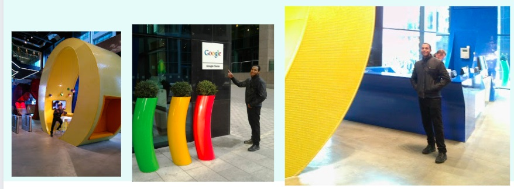

¿Quien soy?
Soy un desarrollador Full-Stack con amplia experiencia en
vb.net, Laravel, Git, Vue.js, JavaScript, Python y AJAX.
Trabaje en varios proyectos a lo largo de mi carrera y he sido responsable de lograr muchos de sus éxitos.En mi experiencia profesional en casi 13 años, he trabajado en el desarrollo de aplicaciones web de escritorio y móviles utilizando diferentes tecnologías y herramientas.
Age
34
Email
Danicolmenares7@gmail.com
Telefono
+51 922 370 772
Ubicacion
Lima, Perú
Habilidades técnicas:
Lenguajes:
Experiencia laboral:
www.tecnekboxsac.com
www.tecnekbox.com
-Desarrollo de una aplicacion en Python apk para android para calculo de compresion para motores .
-Participar en reuniones de equipo y presentar informes de progreso.
-Realizar pruebas rigurosas para garantizar la calidad del software.
-Mantener la documentación técnica actualizada.
-Primeros pasos en desarrollo móvil.
-Desarrollo de app en vb.net de Ordenes para taller
-Integrar modulos a aplicaciones sin romperlos y reusando sus datos.
Formación académica:
Habilidades personales::
-Empatia.
-Me gustan los retos.
-Capacidad para trabajar en equipo.
-Capacidad para comunicarse de manera efectiva.
-Proactivo y autodirigido.
-Capacidad para aprender y adaptarse rápidamente a nuevas tecnologías.
-Resolución de problemas y habilidades analíticas.
¿Quien soy?:
Soy un desarrollador Full-Stack con amplia experiencia en vb.net, Laravel, git,Vue.js, JavaScript ,Python y AJAX. Trabaje en varios proyectos a lo largo de mi carrera y he sido responsable de lograr muchos de sus éxitos.
En mi experiencia profesional en casi 13 años, he trabajado en el desarrollo de aplicaciones web de escritorio y móviles utilizando diferentes tecnologías y herramientas.
En términos de habilidades, soy altamente competente y sumamente adaptable a los cambios de paradigmas de trabajo. Gracias a esta cualidad, me ha sido posible mantenerme vigente en el mercado laboral durante tanto tiempo. Atribuyo esta tenacidad a mi amor por la tecnología en general.
Mi enfoque principal ha sido en el desarrollo de aplicaciones web erp o de control de inventarios usando Laravel y Vue.js, vb.net lo que me ha permitido trabajar en proyectos de alta calidad y garantizar una excelente experiencia de usuario.
Uno de mis mayores logros como desarrollador fue liderar el desarrollo / diseño y la implementación de un sistema de Ordenes de servicios personalizado para una empresa en mi localidad . Este proyecto fue tan exitoso que fue implemantado en Mexico, Peru y otros estado de Venezuela mi pais de origen lo desarrolle hace muchos años su codigo no es tan prolijo ni escalable como el de alguna aplicacion que pueda hacer hoy en dia basicamente era un producto minimo viable MVP incluso no exitia git como lo conocemos hoy dia cleancode y principios SOLID eran bastante jovenes en ese momento sin embargo hasta el dia de hoy permite a estas empresa mejorar significativamente sus procesos y eficiencia. ejemplo del sofware : Ordenes De Servicios
Además de mi experiencia profesional, también trabajo a manera de hobby en un proyecto paralelo en mi tiempo libre con amigos python para medicion de compresion de motores de combustion interna para hayar la mejor relacion de compresion del mismo en una aplicacion sencilla pero muy util para mecanicos y aficionados a los autos.
Como no tener pasion por lo que hago si Gracias a la Tecnologia he cumplido varios de mis sueños en el año 2014 cumpli otro de ellos:
